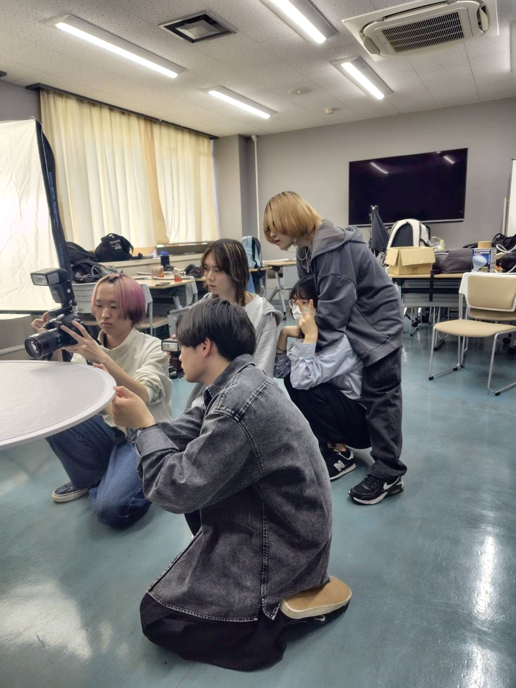
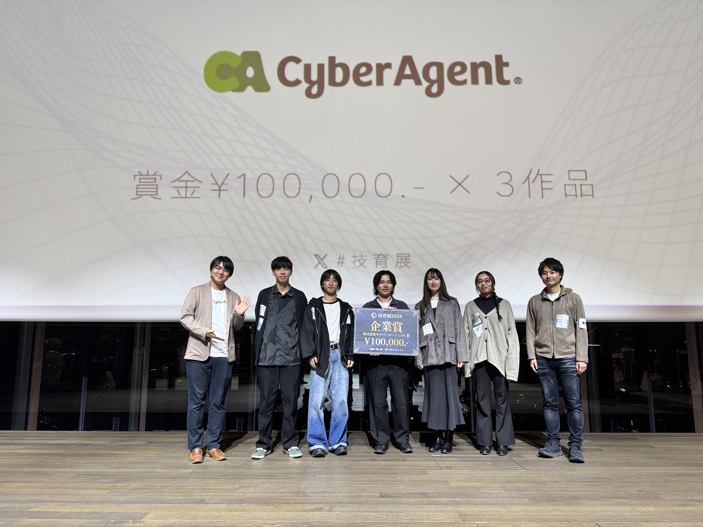

私たちのゼミでは、コンピュータビジョン（CV）、コンピュータグラフィックス（CG）、人工知能（AI）などの情報工学分野を中心に研究を行っています。 研究で得た知識や技術を生かし、オリジナルのソフトウェアやアプリケーションの開発にも取り組み、実社会で活用できるシステムの実現を目指しています。 現在は2年生から4年生までの学生が、それぞれの興味や関心に応じた研究班に所属し、日々研究・開発を進めています。
また、地域住民や企業、自治体との連携を重視し、学生主体で企画・調査・情報発信などの活動にも積極的に取り組んでいます。 研究成果を学内だけにとどめるのではなく、地域社会の課題解決や新たな価値の創出につなげることを目標に、実践的な学びを深めています。
最新の活動報告はSNSで発信しています。ぜひフォローしてチェックしてください。
お問い合わせもSNSのDMからお気軽にどうぞ。
@nu.tanaka_lab
最新情報を配信中